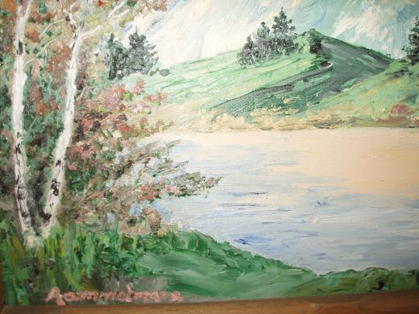

Antikvariniai baldai, aksesuarai, daiktai skelbimai | Plius.lt
2020.10.30 04:30

Uždaryti Dėti skelbimą Nemokamai Skelbimai Mano paieškos Pagalba Prisijungti + Dėti skelbimą Nemokamai Meniu Pradžia Lietuva Baldai, interjeras Antikvariniai baldai, aksesuarai Baldai , 35 Indai, stalo įrankiai , 36 Laikrodžiai , 19 Paveikslai, ikonos , 83 Skrynios , 4 Skulptūros, statulėlės , 74 Smulkios dekoracijos , 11 Šviestuvai , 39 Vazos, dekoratyvinės lėkštės , 38 Veidrodžiai , 2 Žvakidės , 17 Kita , 32 Visi Privatus Verslas Pigiausi Naujausi
Antikvariniai baldai, aksesuarai, daiktai skelbimai
(390) Domina antikvariniai baldai, aksesuarai, daiktai? Antikvarinių baldų, aksesuarų, daiktų skelbimai, pasiūlymai, kainos. prieš 5 val. 5 lempų šviestuvas - liustra 15 € Šviestuvai Utena Parduoda prieš 5 val. STATULĖLĖ DELFINAI 3 € Skulptūros, statulėlės Radviliškis Parduoda prieš 5 val. ŽVAKIDĖ ŠIRDELĖS 3 € Žvakidės Radviliškis Parduoda prieš 6 val. SENOVINIS RANKINIS 105 CM PJŪKLAS 15 € Kita Vilnius Parduoda prieš 6 val. SENOVINIS ĄŽUOLINIS GULSČIUKAS 5 € Kita Vilnius Parduoda prieš 6 val. VAZOS 4 € Vazos, dekoratyvinės lėkštės Vilnius Parduoda prieš 6 val. Melchiorinis Antikvarinis Šaukštelis 2 € Indai, stalo įrankiai Vilnius Parduoda prieš 6 val. Paveikslas 23 X 31 cm 2 € Paveikslai, ikonos Vilnius Parduoda prieš 7 val. Jungikliu,rozeciu apdaila 22 € Kita Kaunas Parduoda prieš 7 val. Paveikslai 30 € Paveikslai, ikonos Druskininkai Parduoda prieš 8 val. Senoviniai antikvariniai staliukai 90 € Stalai, kėdės Vilnius Parduoda prieš 10 val. Variniai paveikslai -bareljiefai ,varinis raktas10kg 83/43cm 1 € Paveikslai, ikonos Vilnius Parduoda prieš 10 val. VARINIS MAIRONIO PAVEIKSLAS 1 € Paveikslai, ikonos Vilnius Parduoda prieš 10 val. Bokalas 6 € Indai, stalo įrankiai Radviliškis Parduoda prieš 10 val. Servyzas 75 € Indai, stalo įrankiai Radviliškis Parduoda prieš 10 val. Saukstukai 10 € Indai, stalo įrankiai Radviliškis Parduoda prieš 10 val. Seni saukstukai 13 € Indai, stalo įrankiai Radviliškis Parduoda prieš 10 val. Saukstukai 10 € Indai, stalo įrankiai Radviliškis Parduoda prieš 10 val. Medinis paveikslas 10 € Paveikslai, ikonos Radviliškis Parduoda prieš 10 val. Paveiksliukas paris 6 € Paveikslai, ikonos Radviliškis Parduoda prieš 10 val. Don kihotas 12 € Paveikslai, ikonos Radviliškis Parduoda prieš 10 val. Marija 5 € Paveikslai, ikonos Radviliškis Parduoda prieš 10 val. Paveikslas drobe 45 € Paveikslai, ikonos Radviliškis Parduoda prieš 10 val. Paveikslas 6 € Paveikslai, ikonos Radviliškis Parduoda prieš 10 val. Medinis paukštis 11 € Paveikslai, ikonos Radviliškis Parduoda prieš 10 val. Paveikslas 1965m 17 € Paveikslai, ikonos Radviliškis Parduoda prieš 10 val. Paveiksliukas 12 € Paveikslai, ikonos Radviliškis Parduoda prieš 10 val. Paveiksliukai 14.48 € Paveikslai, ikonos Radviliškis Parduoda prieš 10 val. 3 paveiksliukai 10 € Paveikslai, ikonos Radviliškis Parduoda prieš 10 val. Statulele 12 € Skulptūros, statulėlės Radviliškis Parduoda 1 2 3 4 5 Kitas puslapis » Išsaugok pasirinktą paieškąParašykite savo nuomonę Kontaktai Reklama Apsipirk saugiai Naudojimo taisyklės Privatumo politika DUK © 2003-2020 Autogidas.lt | Domoplius.lt
- Antikvariniai daiktai • Oldtimers forumas
- Antikvariniai Vintage Retro daiktai - Parduodunaudota.lt
- Antikvariniai daiktai Rugsėjis 2020
- antikvariniai daiktai skelbimai | Skelbimai.lt - nemokami ...
- Antikvariniai ginklai I Ginklu parduotuve I Karinis I ...
- Antikvariniai daiktai ir kolekcionavimas: žinynai ...
- AntikvariniaiBaldai.LT - antikvariniai ir senoviniai baldai
- Senoviniai, antikvariniai daiktai, dekoro detalės ...
- antikvariniai daiktai skelbimai - Skelbiu.lt
- SENOVĖS PRABANGA – Prekyba senoviniais ir antikvariniais ...
- Antikvariniai daiktai • Oldtimers forumas
Antikvariniai daiktai 1) Skyrelyje „Perku / Parduodu senienas, antikvarinius daiktus“ talpinami skelbimai ir aukcionai. Šiame skyrelyje vyksta prekyba tik daiktais: interjeras, buitiniai rakandai, ekipuotė, plokštelės, monetos ir t.t. Amžiaus cenzas 30 metų.
- Antikvariniai Vintage Retro daiktai - Parduodunaudota.lt
forume Antikvariniai daiktai. Paskutinis pranešimas: 2019 Gru 04 Tre, 10:29. Paulyx Neatsakyta Apranga? forume Antikvariniai daiktai. Paskutinis pranešimas: 2019 Gru 03 Ant, 0:01. Paulyx Detalė. forume Antikvariniai daiktai. Paskutinis pranešimas: 2019 Geg 09 Ket, 14:42. Tadas_2. Kokį kondensatorių naudoti? forume Antikvariniai daiktai ...
- Antikvariniai daiktai Rugsėjis 2020
Antikvariniai daiktai Kiekvienas gyvenimas turi savo asmeninę didelę šventę, tačiau taip pat yra bendras vieningas, linksmas - Naujųjų metų! Pagrindinė jo puošmena jau seniai buvo Kalėdų eglutė, ji pasirodė namuose su caro Petro įsakymais, ir tai jau šimtmetis, kad mus laimingi.
- antikvariniai daiktai skelbimai | Skelbimai.lt - nemokami ...
Antikvariniai, kolekciniai bei kiti senoviški, tarybiniai daiktai, senoviniai, antikvariniai baldai, lietuviški sendaikčiai. Visa informacija (daugiau daiktų, nuotraukos bei KAINOS) tinklapyje: www.antikvaraskaune.lt Tinklalapis nuolat atnaujinamas. Siunčiu ir į kitus miestus Jums patogiu būdu.
- Antikvariniai ginklai I Ginklu parduotuve I Karinis I ...
Gal ką sudomintų senoviniai tarybiniai staliniai laikrodžiai. Patvarkius galėtų tikti interjerui ar kolekcionavimui kaip antikvariniai daiktai. Kaina po 3-4 Eur už vieną. Kreiptis Kaune: tel. 8(37)727735.
- Antikvariniai daiktai ir kolekcionavimas: žinynai ...
Antikvariniai daiktai ir kolekcionavimas: knygos, rankraščiai, įv. spaudiniai (anglų k.) Antikvariniai daiktai ir kolekcionavimas: paveikslai, meno spaudiniai ir žemėlapiai (anglų k.) Antikvariniai daiktai ir kolekcionavimas: žaislai, žaidimai, lėlės ir modeliukai (anglų k.)
- AntikvariniaiBaldai.LT - antikvariniai ir senoviniai baldai
Kolekcionavimo forumai, straipsniai, diskusijos apie kolekcionavimą ir asmeninės kolekcijos sudarymą, eksponavimą, naujienos, įvairūs apmąstymai apie kolekcionavimo tendencijas pasaulyje ir Lietuvoje
- Senoviniai, antikvariniai daiktai, dekoro detalės ...
6. Antikvariniai daiktai išlaiko arba padidina vertę. Gerai prižiūrimų antikvarinių daiktų vertė laikui bėgant didėja. Nors kainos kyla ir krenta (beje daugelis ekspertų sako, kad dabar yra geriausias laikas investuoti į senovinius daiktus), antikvariniai daiktai yra gera investicija.
- antikvariniai daiktai skelbimai - Skelbiu.lt
5 antikvariniai daiktai, kurie privers patikėti vaiduokliais: Elektrinė kėdė. Tai buvo kėdė nepanaši į jokią kitą kėdę. Vienas žmogus užėjo į antikvarinių daiktų parduotuvę. Parduotuvėje jis ranka užkliudė kėdę ir pajuto, kad plaukeliai ant jo rankos pasistojo piestu, tarsi kėdė būtų turėjusi kokį nors elektros ...
- SENOVĖS PRABANGA – Prekyba senoviniais ir antikvariniais ...
Antikvariniai baldai, sendaikčiai ir interjero detalės Jūsų namams. Pristatome į namus visoje Lietuvoje. Žiūrėkite mūsų antikvarinių baldų katalogą.
Antikvariniai daiktai 1) Skyrelyje „Perku / Parduodu senienas, antikvarinius daiktus“ talpinami skelbimai ir aukcionai. Šiame skyrelyje vyksta prekyba tik daiktais: interjeras, buitiniai rakandai, ekipuotė, plokštelės, monetos ir t.t. Amžiaus cenzas 30 metų.
forume Antikvariniai daiktai. Paskutinis pranešimas: 2019 Gru 04 Tre, 10:29. Paulyx Neatsakyta Apranga? forume Antikvariniai daiktai. Paskutinis pranešimas: 2019 Gru 03 Ant, 0:01. Paulyx Detalė. forume Antikvariniai daiktai. Paskutinis pranešimas: 2019 Geg 09 Ket, 14:42. Tadas_2. Kokį kondensatorių naudoti? forume Antikvariniai daiktai ...
Antikvariniai daiktai Kiekvienas gyvenimas turi savo asmeninę didelę šventę, tačiau taip pat yra bendras vieningas, linksmas - Naujųjų metų! Pagrindinė jo puošmena jau seniai buvo Kalėdų eglutė, ji pasirodė namuose su caro Petro įsakymais, ir tai jau šimtmetis, kad mus laimingi.
Antikvariniai, kolekciniai bei kiti senoviški, tarybiniai daiktai, senoviniai, antikvariniai baldai, lietuviški sendaikčiai. Visa informacija (daugiau daiktų, nuotraukos bei KAINOS) tinklapyje: www.antikvaraskaune.lt Tinklalapis nuolat atnaujinamas. Siunčiu ir į kitus miestus Jums patogiu būdu.
Gal ką sudomintų senoviniai tarybiniai staliniai laikrodžiai. Patvarkius galėtų tikti interjerui ar kolekcionavimui kaip antikvariniai daiktai. Kaina po 3-4 Eur už vieną. Kreiptis Kaune: tel. 8(37)727735.
Antikvariniai daiktai ir kolekcionavimas: knygos, rankraščiai, įv. spaudiniai (anglų k.) Antikvariniai daiktai ir kolekcionavimas: paveikslai, meno spaudiniai ir žemėlapiai (anglų k.) Antikvariniai daiktai ir kolekcionavimas: žaislai, žaidimai, lėlės ir modeliukai (anglų k.)
Kolekcionavimo forumai, straipsniai, diskusijos apie kolekcionavimą ir asmeninės kolekcijos sudarymą, eksponavimą, naujienos, įvairūs apmąstymai apie kolekcionavimo tendencijas pasaulyje ir Lietuvoje
6. Antikvariniai daiktai išlaiko arba padidina vertę. Gerai prižiūrimų antikvarinių daiktų vertė laikui bėgant didėja. Nors kainos kyla ir krenta (beje daugelis ekspertų sako, kad dabar yra geriausias laikas investuoti į senovinius daiktus), antikvariniai daiktai yra gera investicija.
5 antikvariniai daiktai, kurie privers patikėti vaiduokliais: Elektrinė kėdė. Tai buvo kėdė nepanaši į jokią kitą kėdę. Vienas žmogus užėjo į antikvarinių daiktų parduotuvę. Parduotuvėje jis ranka užkliudė kėdę ir pajuto, kad plaukeliai ant jo rankos pasistojo piestu, tarsi kėdė būtų turėjusi kokį nors elektros ...
Antikvariniai baldai, sendaikčiai ir interjero detalės Jūsų namams. Pristatome į namus visoje Lietuvoje. Žiūrėkite mūsų antikvarinių baldų katalogą.
